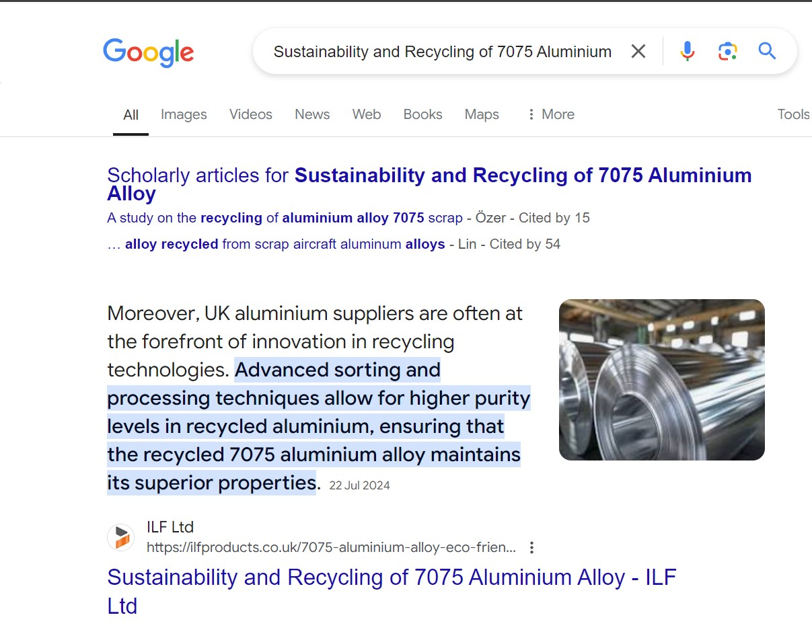
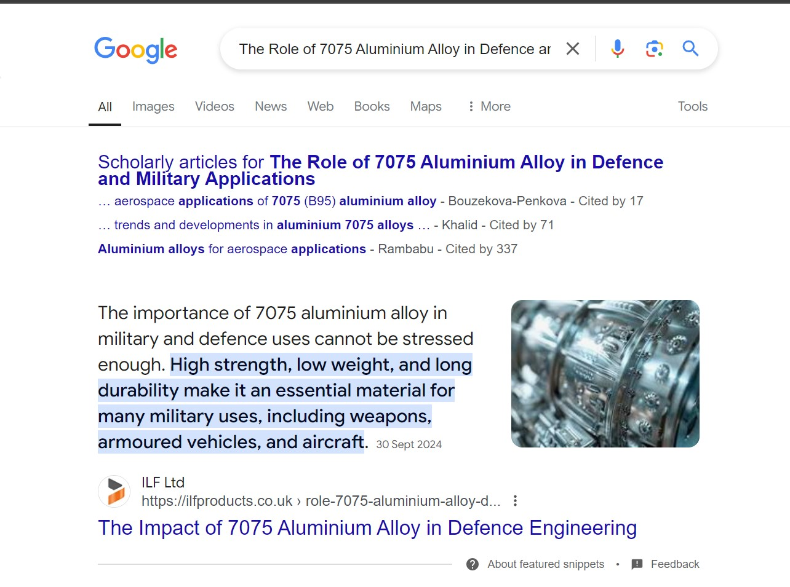
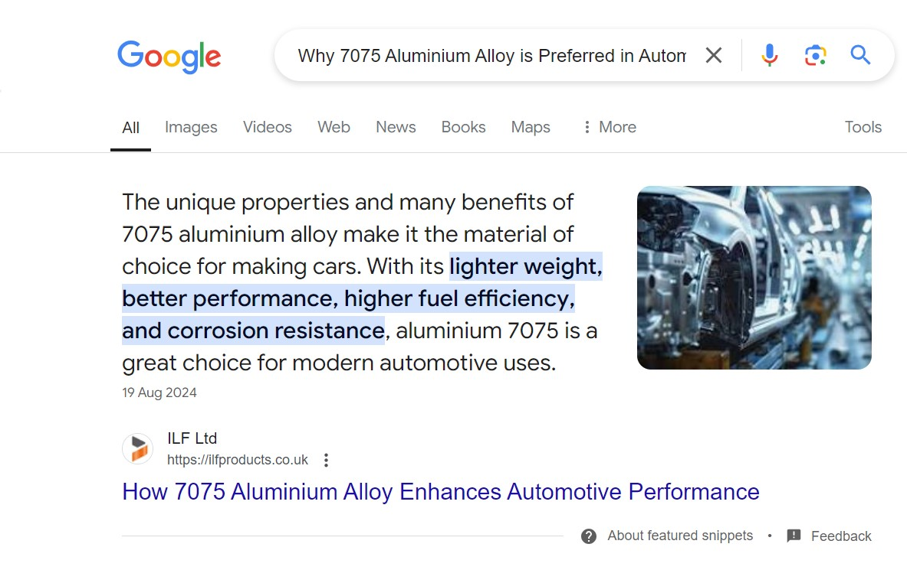
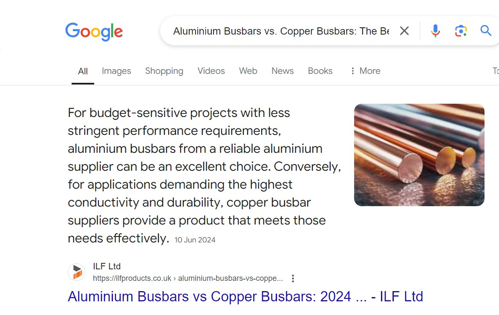
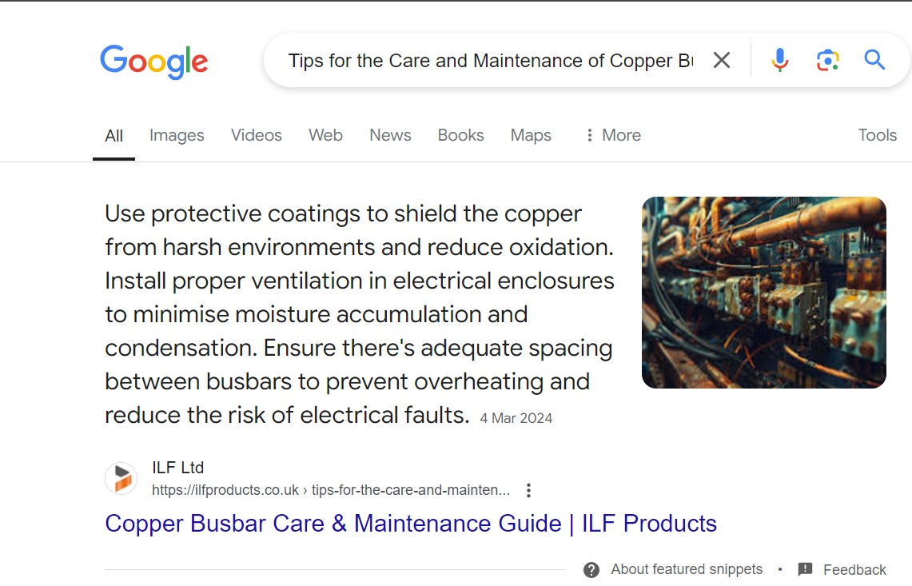
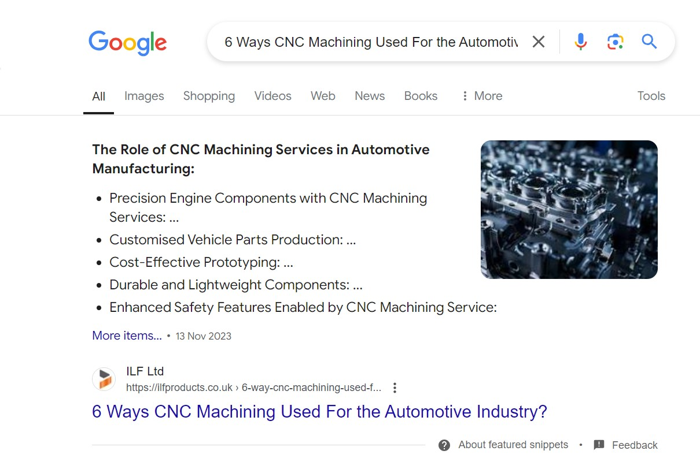
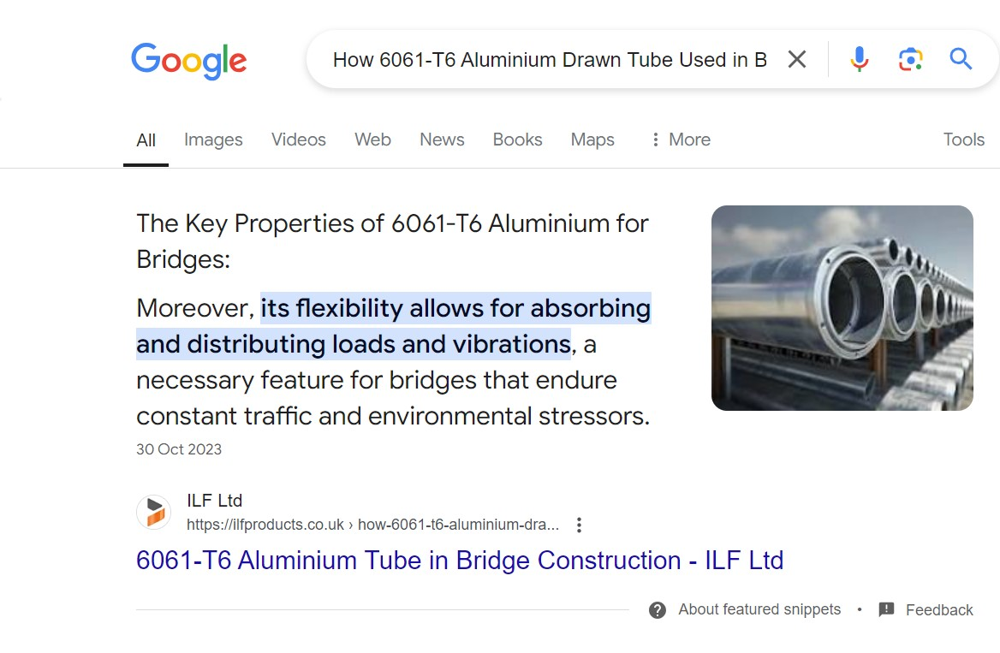

Technical SEO, content optimisation, link building and answer-focused search strategy for a UK copper busbar and metal supplier.
Client: ILF Products
Industry: Copper Busbar Supplier & Metal Stockholders in the UK
ILF Products had limited organic visibility across branded and non-branded searches. Several priority product and service pages were not reaching page one of Google, limiting qualified organic traffic.
Technical and on-page issues included broken links, 404 errors, canonical inconsistencies, missing metadata, heading issues, weak internal linking and limited image optimisation.
The website also needed stronger content coverage and a more consistent publishing strategy to increase topical authority around copper, aluminium, busbars and manufacturing-related searches.
Audited the website and addressed crawlability, indexation, broken links, 404 errors, canonical issues, metadata and structured data. Site architecture and internal linking were strengthened to improve search-engine accessibility.
Improved key product and service pages around relevant buyer searches, including copper and aluminium products. Heading structures, metadata, internal links and image alt attributes were also optimised.
Developed search-led informational content targeting long-tail and question-based searches. Content was structured with clear headings, concise answers and supporting sections to improve traditional organic visibility and answer-focused search performance.
Supported a focused backlink strategy aimed at strengthening topical relevance, domain authority and the ranking potential of commercial pages.
The campaign generated measurable organic growth, with several priority keywords moving onto Google's first page.
As part of the content strategy, informational articles were created and optimised around specific questions, topics and search intent.
Clear answer structures, descriptive headings, concise explanations and supporting information helped multiple ILF Products articles gain prominent visibility within Google's featured-answer results.

Sustainability & Recycling of 7075 Aluminium Alloy

7075 Aluminium in Defence Engineering

7075 Aluminium in Automotive Manufacturing

Aluminium Busbars vs Copper Busbars

Copper Busbar Care & Maintenance

CNC Machining for the Automotive Industry

6061-T6 Aluminium in Bridge Construction